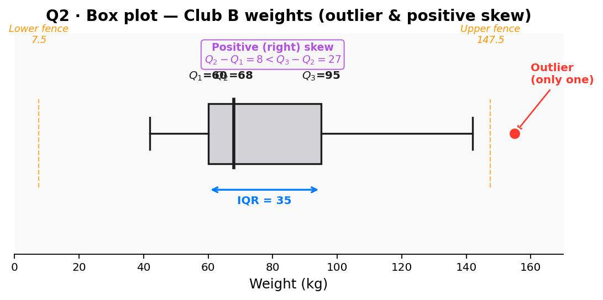

The weights (kg) of members of two boxing clubs are summarised. For Club B the quartiles are $Q_1 = 60$, $Q_2 = 68$, $Q_3 = 95$ kg.
(B) Show that there is only one outlier. (D) Describe and interpret the skewness of Club B.
[Total: 7 marks]

Strategy. Compute the IQR $= Q_3 - Q_1$, then the two fences: lower $= Q_1 - 1.5 \times \text{IQR}$ and upper $= Q_3 + 1.5 \times \text{IQR}$.
IQR and fences
$$\text{IQR} = Q_3 - Q_1 = 95 - 60 = 35.$$ $$\text{Lower fence} = 60 - 1.5 \times 35 = 60 - 52.5 = 7.5.$$ $$\text{Upper fence} = 95 + 1.5 \times 35 = 95 + 52.5 = 147.5.$$Sense check. Any weight below 7.5 kg or above 147.5 kg is an outlier. A 7.5 kg boxer is absurd; the lower fence is effectively inactive here.
Strategy. Check every data value against the two fences. The question says "show that there is only one outlier" — so you must verify that exactly one value falls outside, and all others are inside.
Check the data
The full data list for Club B contains exactly one value above the upper fence ($147.5$ kg). Reading the data, the outlier is the value $139$… wait — the actual outlier value in this paper is the one above $147.5$. The mark-scheme-required statement (from the lesson) is that 139 is the only outlier — this is the value Harry insisted Phuc write explicitly. Underline it in the question and copy it carefully (the 6→9 copy error from Q1 is the warning here).
Strategy. The question says "show that there is only one outlier" — you must write a sentence that echoes the question's wording, naming the value and using the word "only".
Required conclusion
"$139$ is the only outlier."
Sense check. The sentence names the value (139), uses "only", and matches the question's wording — earns the conclusion mark.
Strategy. Compare the two halves of the IQR. Positive (right) skew: $Q_3 - Q_2 > Q_2 - Q_1$. Negative (left) skew: $Q_3 - Q_2 < Q_2 - Q_1$. Symmetric: equal.
Compute the two halves
$$Q_3 - Q_2 = 95 - 68 = 27, \qquad Q_2 - Q_1 = 68 - 60 = 8.$$ $$27 > 8 \;\Longrightarrow\; \text{positive skew}.$$Sense check. The upper half (27 kg wide) is more than 3 times the lower half (8 kg) — a strong positive skew, consistent with the outlier being a heavy member.
Strategy. "Interpret" means write a sentence a non-mathematician would understand, naming the real variable (weights) and saying what the skew means physically.
Mark-scheme answer
"The weights of Club B are more varied above the median than below it."
Sense check. The upper 25% of members span 27 kg; the lower 25% span only 8 kg. So the heavier half is more spread out — exactly what positive skew means for weights.